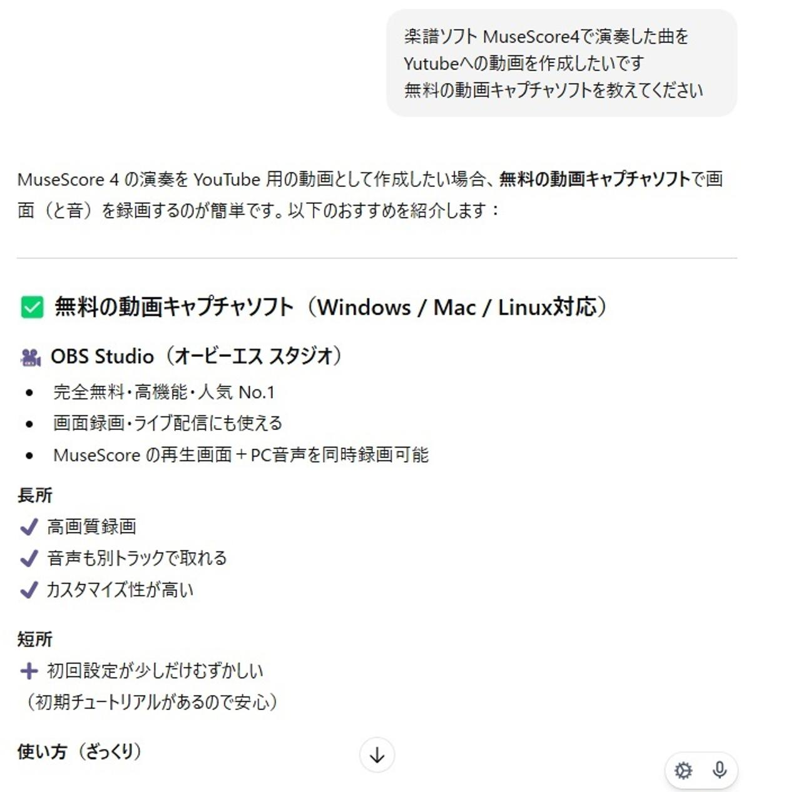
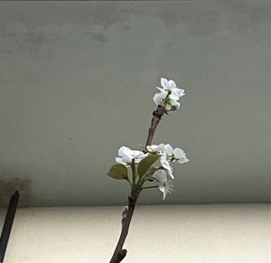

うるがいの話 ある日
最新: AIとのチャット【うるがいの話 ある日】とは 一日だけのプログです
『うるがいの話』の最新一日だけのプログで、通信料が少なく経済的だ。カニの画像をクリックすると全ての日付が載る『うるがいの話』サイトを表示します
|
|
【うるがいの話】 うるがい(ｳﾙｶﾞｲ urugai)とは、『もずくがに』の名前でとても大きくなります。 |
|---|---|
|
|
【カミマヤーの話】 猫のことを方言でマヤーといいます。カミマヤー（kamimayaa）とは、神の猫のことです。 |
|
【たながぁの音楽】 たながぁ（ﾀﾅｶﾞｰ tanagaa）とは手長えびのことで、何種類かあり大きいのは車 エビぐらいになります。 |

|
【ぶながぁの話】 ぶながぁ(ﾌﾞﾅｶﾞｰ bunagaa)とは、赤い髪の毛、赤い身体、そして身長は１ｍ２０ｃｍ ぐらい、川の蟹を食べているの目撃された。場所は沖縄県国頭郡大宜味村のと ある村僕の隣近所に住んでいる爺さんから、聞いた話です。 |
|
|
【ギーマの話】 ギーマ(giima)とは、山原の里山に咲くスズランに似た、 花を付けます。実は食べられます、 気が付くと口の周りが紫になっています。 |
2026年01月10日 (土）AIとのチャット
15:26
最近ＣｈａｔＧＰＴをあまり利用していませんでした、すると利
用してと時々メールが来る。そうはいっても、特別無いし・・・
フと前から、思っていたことをチャットで書き込む。
楽譜ソフト MuseScore4で演奏した曲を
Yutubeへの動画を作成したいです
無料の動画キャプチャソフトを教えてください

で、実際に使ってユーチューブ動画にアップした。これまでは有
料のソフトを利用していたのだが
2025.10.18日 (土) 自動課金 メーカーへのメール
Ｂ’ｓ動画レコーダーを長らく利用しています、最新のＢ’ｓ動
画レコーダー１２はこれまで、画面サイスの範囲指定の機能が無
くなっています！！。
元のバージョンに戻したいです！！！！、それと、自動課金は知
らずに、購入になっているようで驚いています。自動課金は、削
除しました。
口座情報は、引き落とし後、削除します。個人的には詐欺にあっ
た気がしています。
このソフト、画面をキャプチャーするときの録音にバグがあるの
か、パソコンの音量を９０％近くにしないと録画したときの再生
音量が、小さくし過ぎて以前は、パイロンのプログラムで動画の
音量を増幅したりしていたのです。この無料が、普通の再生音量
で忠実に再生出来ている。それと、動画のサイズが半分で済んで
いる。さすが、グローバルアプリである。
始めてのアップ動画には、無料の動画キャプチャーを使ったと概
要欄に書き込んだ。
ボクサー サイモン＆ガーファンクル ４分２９秒
https://youtu.be/2jrurDo75nw
梨の白い花
